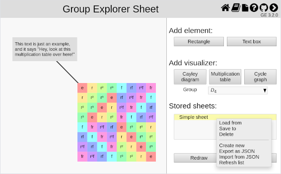
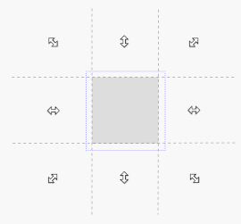
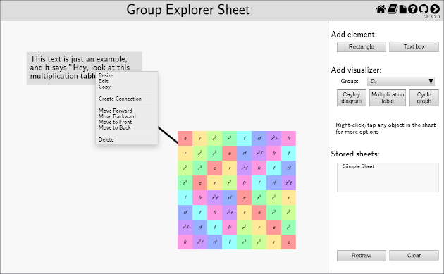
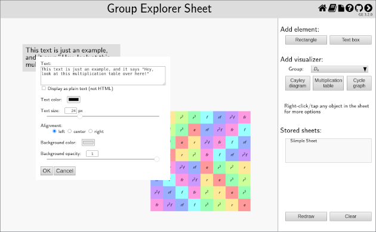

This page describes how to interact with sheets in Group Explorer. If you are unsure what sheets are, read the description here. A blank sheet window looks something like the following picture.

Let us consider all the things one can do with a sheet, grouping them categorically.
The sheet itself
A blank sheet is shown as a white region, the left side of the window pictured above. We’ll call this “display window” in what follows. In this region you can display “sheet items,” rectangular “nodes” connected by “links”. Here is an image of a window containing a sheet with three items: two nodes, a multiplication table and box of text with a gray background, and a connecting line linking them together.

The right side of the window, the “control window,” displays some of the operations you can perform on the sheet. These include creating new items to add to the display, and loading and storing sheets for later use. Other operations are available through the context menus of the displayed sheet items, as discussed below.
(If the control window isn’t visible you can expose it by clicking the “〈” icon in the upper right-hand menu. If it’s visible and you’d like to devote the entire browser viewport to the display window you can hide the sheet controls by clicking the “〉” icon.)
If you wish to experiment with a sheet without creating one, there are links in each group’s Group Info page that will create sheets for you (e.g. “Show me all the views connected together in a sheet” link in the Views section).
Dialog boxes and menus
Dialog boxes occur at several points in working with sheets for various reasons. You can move them around the screen by dragging them with your mouse [or finger] to a new position. Menu positions are fixed.
Menus may be dismissed without taking any action by clicking somewhere on the page outside the menu. Diaglog boxes require an explicit action, however, like pressing a “Cancel” button.
Dialog inputs
Many of the inputs accepted by Sheet dialogs will be displayed as HTML, not simply as text. This will be pointed out in the following discussion. Group theory nomenclature is filled with subscripts and special characters, and HTML enables these to be rendered as it is generally seen. Here are a few key points:
- you can use any Unicode character your browser recognizes, like “ℤ” or “⋊”
- you can used HTML entities like “ℤ” or “ℤ” (equivalent to “ℤ”)
- you can use simple inline HTML formatting like “<i>…</i>” (italicize) and “<sub>…</sub>” (subscript), so “<i>H</i><sub>2</sub>” displays as “H2“
- break lines with “<br>”, not \n
- be careful of ambiguous uses of “<” and “&”; they must be written as “<” and “&”, respectively
Some dialogs use both a slider and a textarea to set a configuration value: these values are synchronized automatically. Thus you can move the slider back and forth to get a qualitative idea of the parameter’s effect on the display, and you can type in an exact value when you are trying to match another element.
Control window
Add element
Click the “Rectangle” button to add a solid gray rectangle to the sheet; click the “Text box” button to add a small text box to the sheet containing the words “Enter text.” You can move and resize these items after they have been placed, including moving them forward or backwards in the sheet, as described below.
Rectangles are useful for visually grouping items on the sheet by placing the rectangle behind them. Text boxes can be useful for labeling items on the sheet with a caption or an explanation. Both items serve only a visual purpose.
As with all nodes on a sheet, select “Edit” from the item’s context menu to edit its properties.
Add visualizer
Clicking one of the “Cayley diagram”, “Multiplication table”, or “Cycle graph” buttons will add a copy of the corresponding visualizer to the sheet in the upper left-hand corner. Choose the group you’d like to visualize from the drop-down list below the buttons, which offers you a choice of any of the groups in the Group Explorer library (ordered by their number of elements).
You can move and resize the visualizer much as you do with other nodes. See the discussion on visualizer editing for further information about configuring the visualizer.
Stored sheets
Group Explorer can store the sheets you develop and make them available for viewing at a later time, and it can import and export sheets as strings so you can share them or store them elsewhere. The stored sheets will persist even after you have left the Group Explorer website, or indeed even after you have turned your computer off. (They use your browser’s “IndexedDB” storage.)
The stored sheets are given names when they’re saved, which are displayed like a list of files under the “Stored sheets” heading. Much like a file browser, when you right-click [tap] one of sheet names you expose a menu of options, the “stored sheet menu”, as shown in the following picture. (If you click in an area that doesn’t have a sheet name you just get the lower part of the menu. This will be the case, of course, if you’ve just started using Group Explorer and haven’t created any sheets yet.) We’ll discuss the options individually in the following sections.

Create, read, update, delete – oh CRUD
Create
To store the currently displayed sheet under a new sheet name, select “Create” from the stored sheet menu. A small dialog box will appear prompting you to enter a name. As explained above, this name will be displayed in the list as HTML. Type a name into the window and click “OK” to accept the name you’ve provided, or “Cancel” to terminate the operation. In either case, the contents of the display window are not affected.
Load
To load a stored sheet into the display window, select “Load” from the stored sheet menu. Any work you had in the display window will be immediately overwritten by loading the stored sheet.
Save
To update a sheet you’ve already saved with the currently displayed sheet, select “Save” from the stored sheet menu. The contents of the display window will immediately overwrite the previously stored sheet of that name, leaving the display window unchanged.
Delete
To delete a sheet you’ve saved, select “Delete” from the stored sheet menu. The requisite popup will appear to ask if you’re sure.
Export and import
Group Explorer can export and import stored sheets as JSON strings, so you can share them or move them between computers.
Export from current
To export the currently displayed sheet, select “Export from current” from the stored sheet menu. A dialog box will appear with a (potentially very long) text string in its window. You can copy it from the window with your system’s cut-and-paste operation. Changing the text will not affect the displayed sheet.
Import to current
To display a JSON string, select “Import to current” from the stored sheet menu. A dialog box will appear into which you can paste a (potentially very long) JSON string, such as one generated by a preceeding Export request. The imported information will immediately overwrite the contents of the display window.
Refresh list
This option will reload the names of the stored locally sheets and display the results in the “Stored sheets” list. This may be useful in the case that two Sheet tabs are open and a sheet stored in one tab is not reflected in the other.
Display control
Redraw
This button will redraw the current sheet with its original scale and center, clearing the effects of zooming and panning but retaining the current element configurations. It is useful after resizing the window, or after zooming in on a particular feature of a complex sheet.
Clear
This button will remove all objects from the sheet and recover its original scale and center.
Display window
Zoom and pan sheet view
Resizing the window containing the sheet does not resize the sheet. If you would like to zoom in on a particular detail of a complex sheet you can do so with the mouse wheel or an equivalent scrolling gesture (like a two-fingered drag on a touchpad). [On a touch platform use a two-finger pinch/spread.] You can also pan around by right-clicking and dragging the screen. [On touch platforms use a two-finger drag, like zooming only keeping your fingers the same distance apart.]
Moving
Moving a node uses a drag-and-drop pattern familiar from other situations: left-click on the item and drag [one-touch drag] it to its new position. As you move the mouse around the sheet you will notice that the cursor changes when over a node, indicating that the move operation is enabled.
Resizing
To resize a node you first select it by picking “Resize” from the context menu, or by left-clicking [touch-holding] the node. Once selected a light blue outline will appear around the node, and until it is deselected subsequent operations will affect only that node. You resize the selected node by dragging [one-finger] its edge. This is like resizing a window, except that you don’t have to find the edge of the element to drag it: you can start the drag in the screen outside the element, as suggested in the picture below. Just as when resizing a window, the cursor will change when it’s moved around the screen, reflecting the available operation. If you start the drag inside the selected element, it will just reposition the element without changing its size.
You can also use the wheel (or a scrolling gesture) [pinch/spread on a touch platform] to expand/contract the element in all directions equally. Resizing or repositioning the element will not deselect it and may be done repeatedly. To deselect the element simply click [tap] elsewhere in the sheet and the blue outline will disappear.

Context menu
In addition to direct manipulation of sheet items with the pointer, each node has a context menu, which can be raised by right-clicking [tapping] the element. An example of such a menu is shown in the picture below. These functions operate on the selected element. The context menu can be dismissed by clicking on the screen away from it. Connecting lines and morphisms do not have a context menu: right-clicking on them brings up their element editor directly.

Copy
Click this button to copy the selected item on the sheet. Another instance of the same item will immediately appear directly on top of the first instance. You can then move it to the location you desire.
Edit
Each of the sheet items can be further configured with an editor. Node editors are brought up by selecting the “Edit” option from their context menu, while right-clicking [tapping] links brings up their element editors directly. Selecting “Edit” for a visualizer node opens a new tab in the browser with a large view of the visualizer, as explained below. Other elements present a modal dialog box in the Sheet tab. As with other Group Explorer dialog boxes, they may be dragged to a new location. Changes made in the dialog boxes are reflected immediately in the displayed sheet. The dialog is not dismissed until the changes are accepted with “OK” or reverted by clicking “Cancel.”
Rectangle and text box editor
Rectangles and text boxes are very similar: internally, a rectangle is just a text box without text. (You can even edit a rectangle to add text and turn it into a text box.) They use the same editor dialog box, shown below for a text box. By default text box text will be displayed as HTML (see above), but you can override this by checking the “Display as plain text” box. The font color, size, text alignment, and background color may also be configured. The background opacity allows you to adjust the transparency of the node, ranging from completely transparent (opacity = 0, slider all the way to the left) to solid (opacity = 1).

Connection editor
Connecting lines may be configured by right-clicking [tapping] them: the sensitive area extends the length of the line and is at least a tenth of an inch wide. As the following picture shows, you can configure the connecting line’s color, width, and whether or not it is drawn with an arrowhead. In addition to the options of accepting or reverting the changes in the editor, there is also an button to delete the link entirely.

Morphism editor
Editing a morphism is somewhat more involved than editing the other Sheet items, so there is a separate help page on editing homomorphisms.
Visualizer editing
When you select “Edit” for a visualizer node, rather than presenting you with a small dialog (as with, say, rectangles or text boxes), Group Explorer opens a new tab in your browser with a large view of the visualizer. Changes you make in that large view (such as highlighting elements or changing the viewpoint on a three-dimensional diagram) will be reflected immediately in the sheet. You can close that visualizer tab at any time; changes you make there are continuously synced to the sheet.
Creating links
Create connection
To connect one rectangular item in a sheet to another with a straight line, select “Create Connection” from the first item’s context menu. A dialog box will appear, prompting you to select a valid target for the connection, one that does not already share another connection or map with the first. Clicking a valid target will create a new connection, and brings up the connection editor. (The connection editor is preloaded with the configuration from its last use, so if you want to create several identical connections just configure the first one and click “Ok” when asked to edit its successors.) The connection can always be deleted with connection editor’s “Delete” button.
Connections are useful for labelling items in a complex sheet or showing an intricate network of connections, as in a lattice of subgroups.
Create map
Connecting one visualizer in a sheet to another with a homomorphism is very similar to creating a connection. Select “Create Map” from the first visualizer’s context menu, then select a target visualizer. The target must not already share a connection or map with the first. Selecting the target creates the a new map and brings up the morphism editor. For more details, visit the help page on editing homomorphisms.
Move forward, backward
To move an item forward or backwards on the sheet (i.e. farther into the background, or closer to the foreground), open the element context menu and choose “Move forward,” “Move backward”, “Move to Front,” or “Move to Back”. Only nodes can be positioned in this way: the position of a link between nodes is determined by the positions of the nodes it connects. All connecting lines lie at the same level below (farther away than) the lowest of any connected node, so they don’t obscure the nodes they connect in a busy sheet like a subgroup lattice. (Connecting lines can be positioned over an unconnected node, however.) By contrast, Morphism lines are positioned just on top of the nodes they connect, so you can see the elements they map.
Delete
This removes the selected item from the sheet.
Note that if you delete an item that is connected to another item via a connecting line or morphism, the connection(s) will also be deleted.